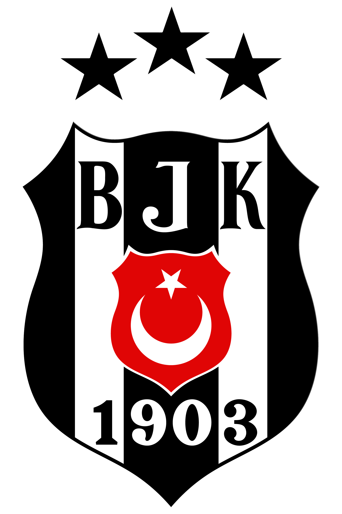
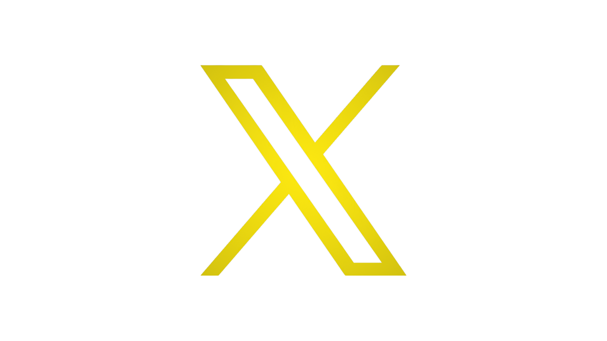

Beşiktaş Futbol Yatırımları Sanayi ve Ticaret A.Ş. ya da kısaca Beşiktaş Futbol A.Ş., İstanbul merkezli profesyonel Türk futbol takımıdır. Takım, 1903 yılında kurulan Beşiktaş Jimnastik Kulübü'nün futbol şubesi olarak Ağustos 1911 yılında kuruldu. 18 Temmuz 1995 tarihinde kurulan Beşiktaş Futbol Yatırımları Sanayi ve Ticaret A.Ş. ile şirketleşti.
| Avrupa Ligi Ön Eleme Maçları | GALİBİYET | BERABERLİK | MAĞLUBİYET |
|---|---|---|---|
| Midtjylland - Beşiktaş (1 tur) | G | X | X |
| Beşiktaş - Midtyjylland (2 tur) | G | X | X |
| Beşiktaş - Hradec Kralove (1 tur) | G | X | X |
| Hradec Kralove - Beşiktaş (2 tur) | G | X | X |
SOSYAL MEDYA/İLETİŞİM


 @besiktas
@Besiktas
@besiktasjk
Beşiktaş JK
@besiktas
@Besiktas
@besiktasjk
Beşiktaş JK
Resmi Telefon: +90 (212) 948 1903
Çağrı Merkezi: 0850 399 1903
E-Posta Adresi: bilgi@bjk.com.tr